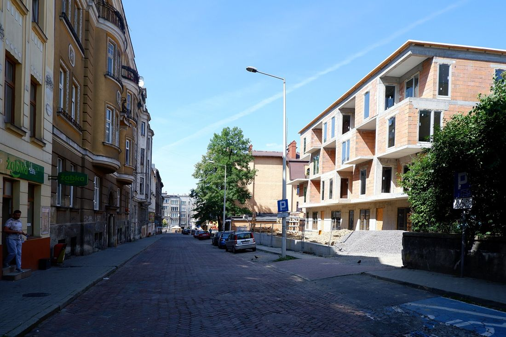
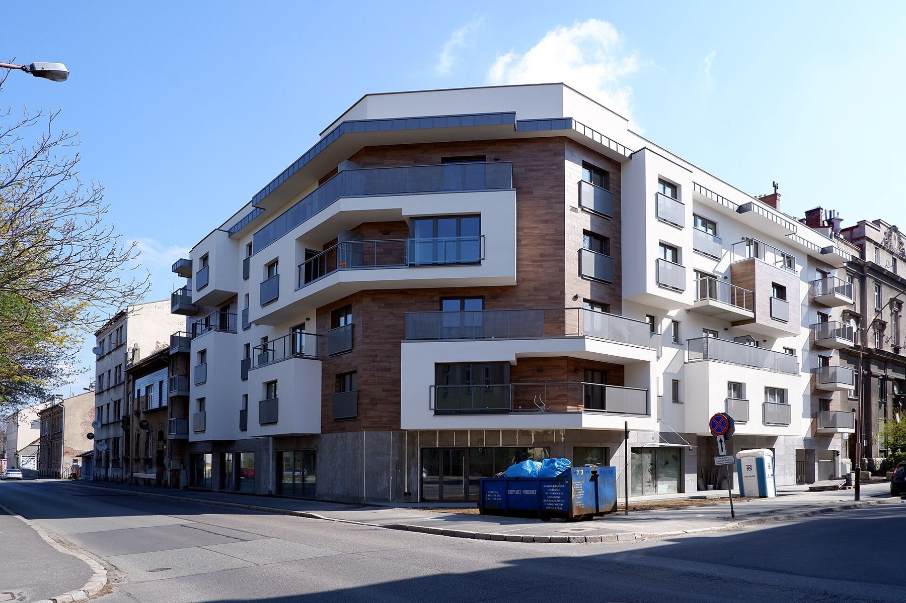
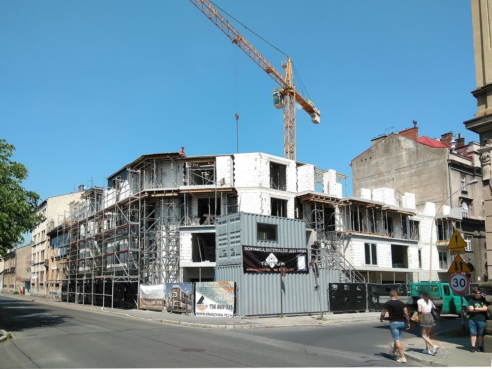
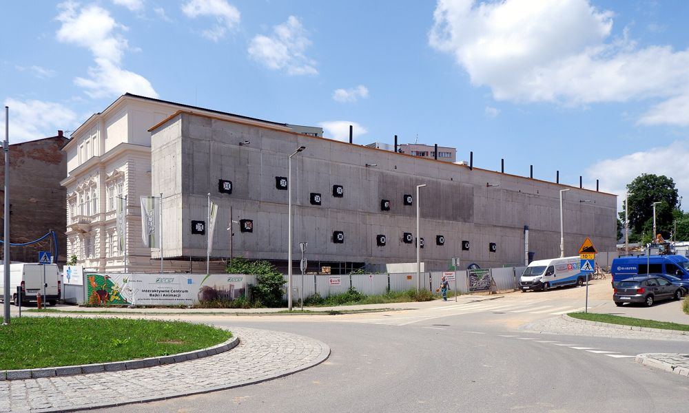
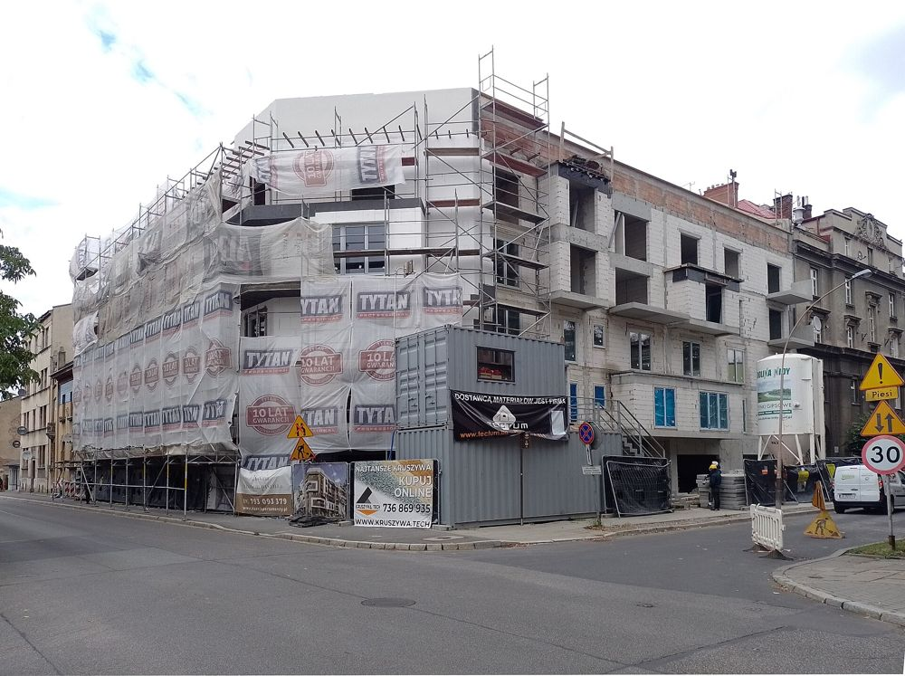
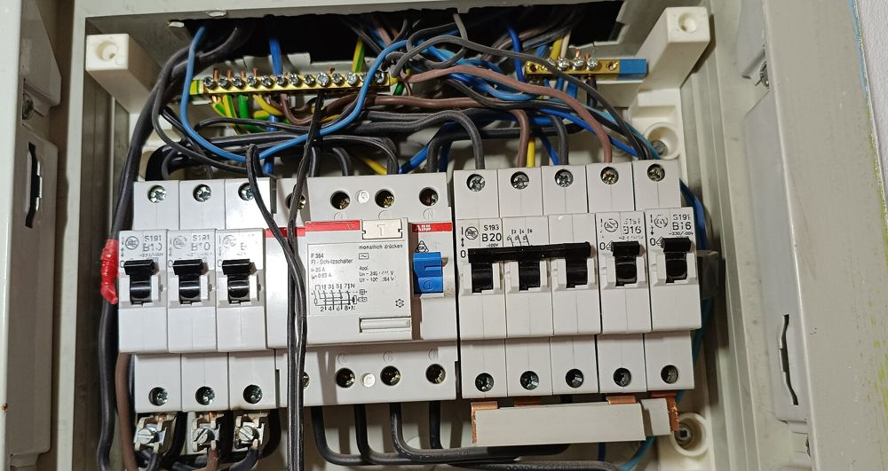
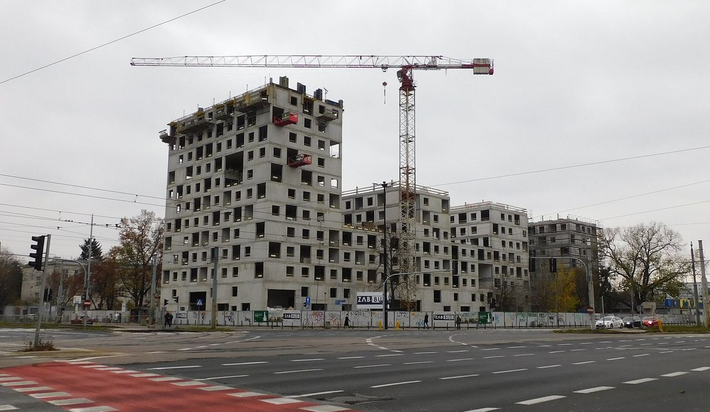
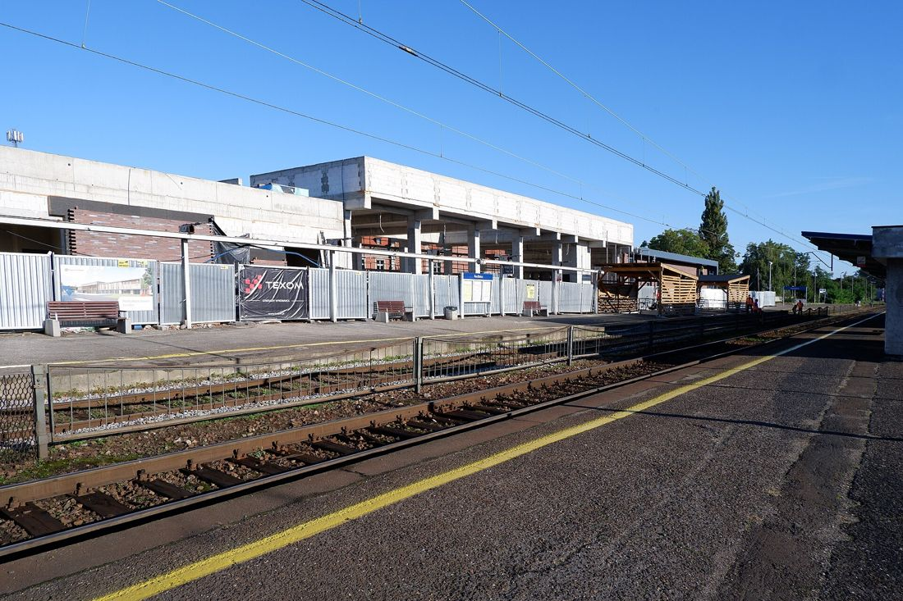
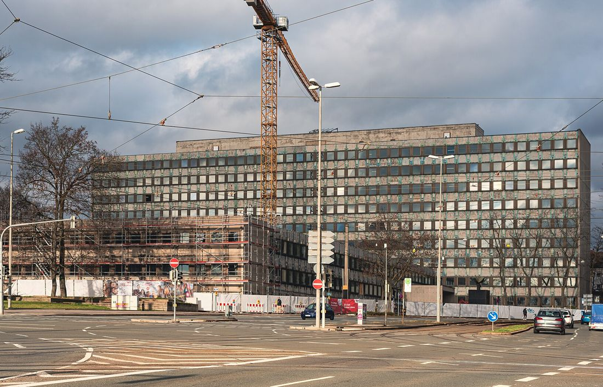

Budynek wielorodzinny w Popieniu
Gmina Jeżów · dla SIM KZN Reymontowski · umowa 2025
Budynek mieszkalny wielorodzinny wraz z infrastrukturą techniczną.

Al. Niepodległości 10, Skierniewice
TM-BUD prowadzi inwestycje jako generalny wykonawca - dla gmin, spółek mieszkaniowych i firm z regionu. Od stanu surowego, przez instalacje, po odbiór i pozwolenie na użytkowanie.
TM-BUD sp. z o.o. działa w Skierniewicach od 2012 roku. Wyrośliśmy z branży elektrycznej (wcześniej jako Tm-Bud Zakład Elektroinstalacyjny), a dziś jako generalny wykonawca budujemy i przebudowujemy budynki wielorodzinne, obiekty użyteczności publicznej i budynki biurowe.
Pracujemy dla samorządów, społecznych inicjatyw mieszkaniowych, szpitali i inwestorów prywatnych. Instalacje elektryczne, oświetlenie awaryjne i systemy sygnalizacji pożaru nadal są ważną częścią naszej pracy.
Otrzymaliśmy dyplom Państwowej Inspekcji Pracy za dbałość o bezpieczeństwo i warunki pracy na budowach. Jesteśmy członkiem Skierniewickiej Izby Gospodarczej.

Budynki mieszkalne wielorodzinneBudowa pod klucz dla SIM, TBS, gmin i deweloperów.
Obiekty publiczne i biuroweSiedziby firm, budynki gminne, targowiska, obiekty usługowe.
Termomodernizacje i przebudowyOcieplenie, elewacja, dach, instalacje i fotowoltaika.
Instalacje elektryczneInstalacje wewnętrzne, sygnalizacja pożaru, oświetlenie awaryjne, monitoring.Wykonujemy też instalacje wodno-kanalizacyjne i grzewcze, linie elektroenergetyczne i telekomunikacyjne oraz prace projektowe w zakresie architektury.
Wybrane inwestycje z ostatnich lat.

Gmina Jeżów · dla SIM KZN Reymontowski · umowa 2025
Budynek mieszkalny wielorodzinny wraz z infrastrukturą techniczną.

ul. Miedniewicka · etap II · dla ZGK sp. z o.o.
Budowa budynku mieszkalnego wielorodzinnego - drugi etap inwestycji.

Gmina Lipce Reymontowskie · Polski Ład
Budynek usługowy, zadaszenie części stanowisk, miejsca postojowe, chodnik i oświetlenie solarne.

Budynek biurowy · oddany 2021
Generalne wykonawstwo budynku biurowego, projekt SooN architekci. Pozwolenie na użytkowanie 31.12.2021.
Zdjęcia w tej wizualizacji są poglądowe. W docelowej stronie pokażemy zdjęcia z Państwa budów.
Na bieżąco piszemy na Facebooku - o podpisanych umowach, rozpoczętych budowach i odbiorach.
Zobacz nasz profil na FacebookuUmowa z Gminą Maków na kompleksową termomodernizację budynku w sołectwie Święte.
Umowa z SIM KZN Reymontowski na budowę budynku wielorodzinnego przy ul. Łowickiej 18.
Umowa na budowę budynku mieszkalnego w gminie Jeżów - budowa w Popieniu już ruszyła.